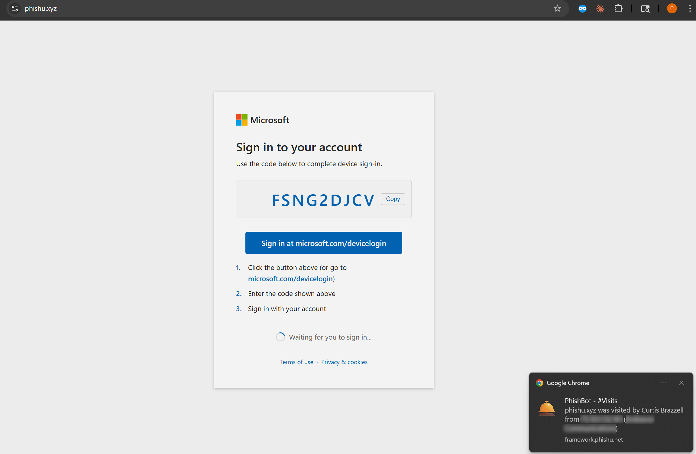
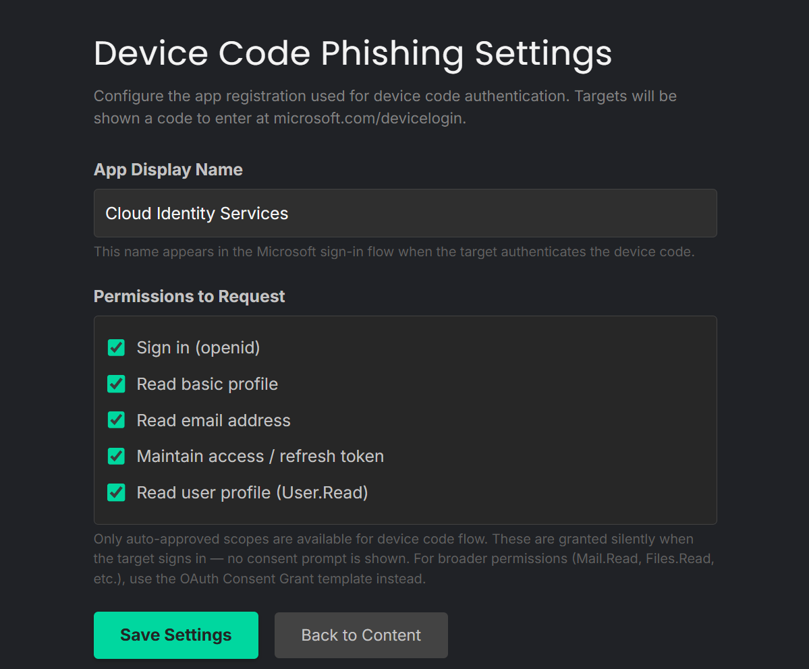
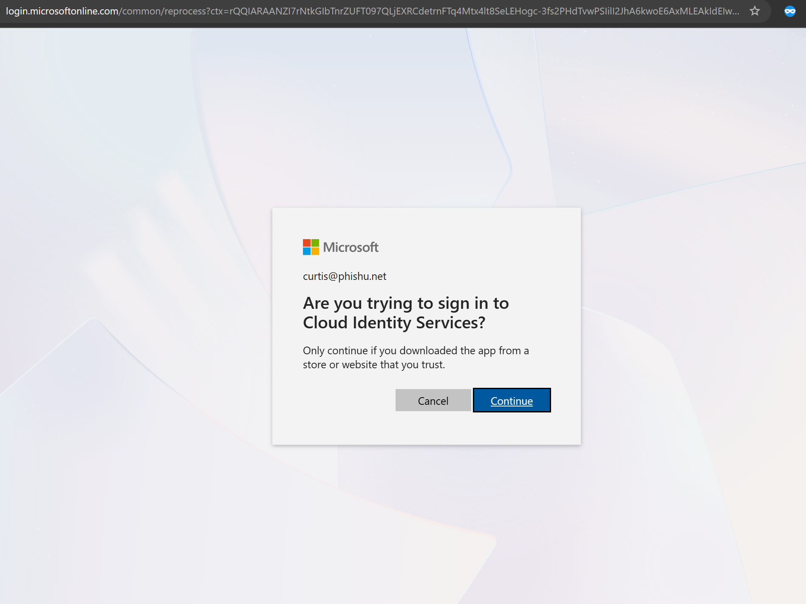
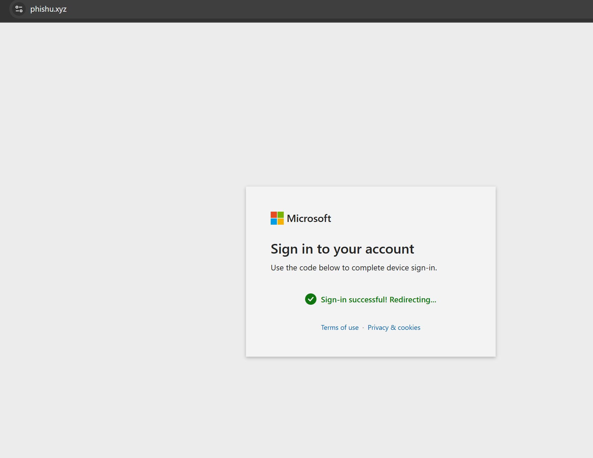
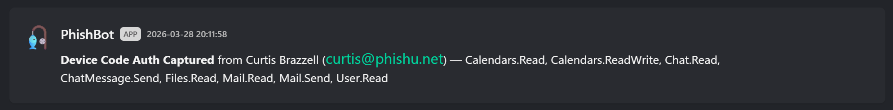
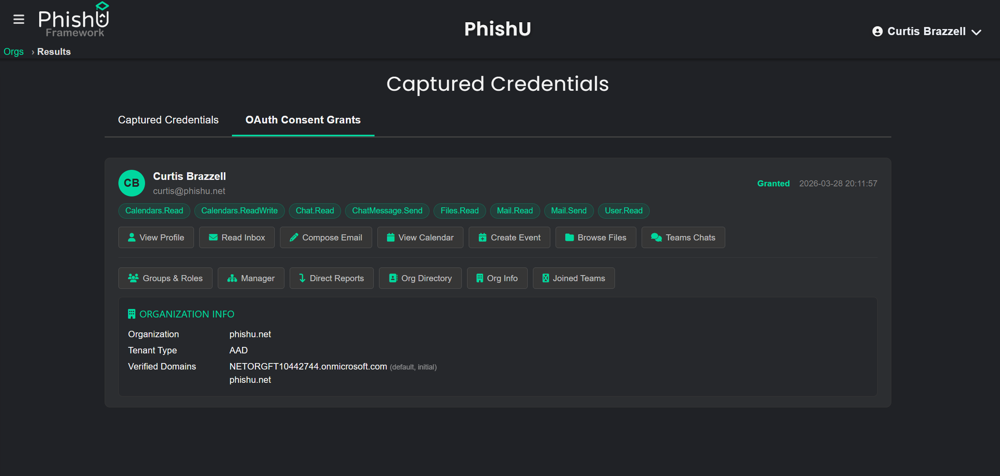

Most phishing simulations still focus on two familiar outcomes: the target clicked the link, or the target typed a password. Device code phishing is a different attack path entirely. The target does not approve scary permissions and does not type credentials into a fake login page. Instead, they complete a normal Microsoft sign-in flow for a device code that belongs to the attacker.
That distinction matters because it makes the technique both stealthier and harder to explain away. The target is sent to a legitimate Microsoft page at microsoft.com/devicelogin, signs in normally, completes MFA normally, and hands over tokens to an attacker-controlled device flow. The PhishU Framework now turns that technique into a point-and-click landing page template built into the same hosted workflow used for campaigns, reporting, analytics, and training.

A Very Different Kind of OAuth Abuse
At a high level, the PhishU Framework provisions a public client app, generates a fresh device code when the target lands on the page, displays that code with a copy button and instructions, and then polls Microsoft until the authentication completes. When the target signs in, the Framework captures the resulting access and refresh tokens.
That makes device code phishing part of the same broader identity-and-token abuse family as Microsoft Entra OAuth Consent Grant simulation, but the path is different. OAuth Consent Grant asks the target to approve an app and its permissions. Device Code asks the target to log a device in for the attacker. No permissions screen. No Accept button. Just a normal Microsoft sign-in flow.
That is also why the success profile is different. Device code phishing intentionally sticks to auto-approved scopes such as openid, profile, email, offline_access, and User.Read. The tradeoff is narrower initial access, but the target never sees a consent prompt. That makes the attack path quieter and often more believable.

Why Attackers Like Device Code Phishing
From an attacker perspective, the appeal is obvious. The target authenticates on the real Microsoft domain. The login page is legitimate. MFA is legitimate. The browser experience is legitimate. The only malicious part is who requested the device code in the first place.
That makes device code phishing one of the cleaner ways to move beyond old credential-harvest thinking. It is not about stealing a password and hoping the target misses the fake page. It is about abusing a real Microsoft flow to get durable tokens without ever showing the victim a scary permissions screen.
The real-world relevance is not theoretical either. Device code phishing has already been observed at scale against hundreds of Microsoft 365 organizations, which is exactly why this belongs in an authorized assessment platform built for realistic phishing work.

Why This Matters for Defenders
Most organizations are still much more prepared to think about fake login pages than token abuse. Device code phishing is a good example of why that gap matters. The target can do everything on a legitimate Microsoft page and still give an attacker durable access to their account.
That changes what a phishing program should test. It is no longer enough to ask whether users can spot a fake login form. Defenders also need to know whether users will authenticate an attacker-controlled device code when the flow looks routine, polished, and familiar.
That is exactly where the PhishU Framework fits. The technique is not treated like a disconnected proof of concept. It connects to campaign delivery, real-time visibility, captured-results workflows, reporting, and training.


Same Token Explorer, Different Entry Point
One of the strongest parts of the implementation is that device code captures feed straight into the same Token Explorer used for OAuth Consent Grant. The attack path is different, but the post-capture workflow is unified. Operators can inspect the grant, refresh tokens, view the victim profile, and let the Framework auto-discover what other Graph endpoints are accessible in that tenant.
That means device code phishing is not just a landing page demo. It becomes a practical assessment workflow. In many environments, even the limited auto-approved scopes are enough to enumerate the org directory, inspect group membership, discover reporting chains, and surface other tenant context that helps explain the downstream impact of the capture.

Device Code or OAuth Consent Grant?
The right answer is usually both, because they test different things.
Use OAuth Consent Grant when the goal is maximum post-exploitation depth and broad delegated access such as mail, files, calendars, and Teams. Use Device Code when the goal is maximum stealth and a higher success rate, because the target just signs in normally and never sees a consent screen.
Together, those two techniques cover two major Microsoft token-abuse paths that most awareness platforms still do not simulate. Add transparent AiTM session hijacking on top, and the broader product story becomes much clearer: PhishU is not stuck measuring only clicks and passwords.
One, Two, Three
If the short version is needed, it is this:
1. Select the Microsoft Entra Device Code template and configure the app display name.
2. Launch the landing page and send the campaign.
3. When the target signs in at microsoft.com/devicelogin, capture the tokens and move straight into the Token Explorer.
That turns a modern identity-abuse technique into a workflow that feels simple enough to run routinely, while still demonstrating the kind of real-world Microsoft tradecraft that most organizations are not testing today.
Want to test Microsoft Entra device code phishing in your environment?
The PhishU Framework now gives operators a point-and-click way to simulate device code phishing, capture persistent tokens, and connect the result directly into reporting and recipient-specific training.
Request a Quote